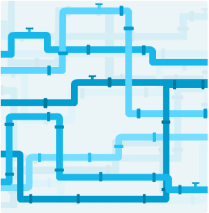

Execute Pipelines on High Performance Computing
CBRAIN has a multitude of computational pipelines that allow you to perform complex "big data" analytics. The pipelines range from simple conversion operations to neuroimaging to genomics to supply chain simulation modeling.
Users can decide what data to use, what options are needed, and then launch pipelines on large-scale computing rapid processing.